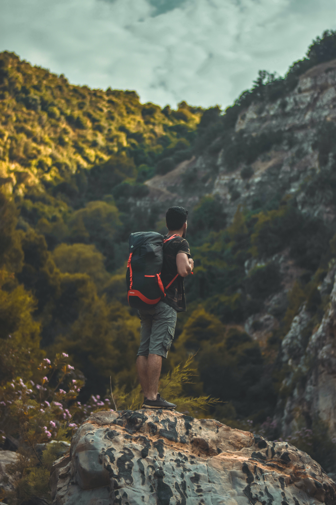

Sri Lanka day tours and excursions include but not limited to jungle trekking, diving & snorkeling, safaris, water based activities such as white water rafting and canoeing, hot-air ballooning and many more choices. Sri Lanka day tours has many and varied excursions, covering different expectations in budget, interest and group size. For some excursions, you may join a group and make some new friends while some can be arranged privately.
There is so much to choose from! Choose from wildlife safaris, city tours, cultural discoveries, and thrilling adventures, as you plan your perfect day excursions in Sri Lanka.
 The ocean around Sri Lanka whispers of tales bygone, ones of regal maritime visits, of bandits and pirates and journeys of explorers and spice merchants. As you plunge into the warm waters and dive below, these stories come to life. The crystal clear waters of the Indian Ocean with a visibility of 20 meters (65ft) provide perfect conditions for diving. With wrecks as dated as the 18th Century dotting the seas, deep reefs and reef walls provide enthralling explorations for scuba divers. For the less adventurous on-shore coral reefs are ideal for snorkelling. The abundant marine life found around the island is surpassed only at Hikkaduwa in the southern coast where the reef is thought to contain more species of fish than the Great Barrier Reef.
The ocean around Sri Lanka whispers of tales bygone, ones of regal maritime visits, of bandits and pirates and journeys of explorers and spice merchants. As you plunge into the warm waters and dive below, these stories come to life. The crystal clear waters of the Indian Ocean with a visibility of 20 meters (65ft) provide perfect conditions for diving. With wrecks as dated as the 18th Century dotting the seas, deep reefs and reef walls provide enthralling explorations for scuba divers. For the less adventurous on-shore coral reefs are ideal for snorkelling. The abundant marine life found around the island is surpassed only at Hikkaduwa in the southern coast where the reef is thought to contain more species of fish than the Great Barrier Reef.
Pro Scuba Diving : 2 Hours = Rs.40,800.00
Scuba Diving : 2 Hours = Rs.93,300.00

Take a demanding trek high in the mountain rainforest of the Knuckles Range, and see the valuable spice – cardamom - growing in the forest, catch sight of rare orchids and birds, and enjoy the exhilaration of exploring spots where few have been before. Traverse virtually unexplored country in the southeast, past the renowned Yala National Park where leopards prowl and elephants roam, past the bird-rich Kumana wetlands and into a region where literally hundreds of ruined temples and maybe even cities lie awaiting discovery in the forests.
Countryside Hike from Kandy : 2 Hours = $120.00
Waterfall Hunt Hiking Tour from Kandy : 2 Hours = $160.00
 Experience the thrills of crumbling rocks beneath the feet, head spinning heights and the earth expanding beneath conquering the mountains of Sri Lanka. The ranges of mountains standing guard around the highlands of Sri Lanka including the Knuckles range, Ella range, Habarana, Sigiriya, Polonnaruwa, Horton Plains and Buttala provide challenging climbs to armature as well as experienced climbers. The newest experience in mountaineering in waterfall climbing with exciting climbs like the rock face of Bambarakanda waterfall, the tallest in the country.
Experience the thrills of crumbling rocks beneath the feet, head spinning heights and the earth expanding beneath conquering the mountains of Sri Lanka. The ranges of mountains standing guard around the highlands of Sri Lanka including the Knuckles range, Ella range, Habarana, Sigiriya, Polonnaruwa, Horton Plains and Buttala provide challenging climbs to armature as well as experienced climbers. The newest experience in mountaineering in waterfall climbing with exciting climbs like the rock face of Bambarakanda waterfall, the tallest in the country.
Forest Rock Climbing from Colombo : 2 Hours = $130.00
Forest Rock Climbing from Horana : 2 Hours = $64.00
Forest Rock Climbing from Mount Lavinia : 2 Hours = $131.00